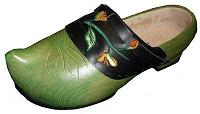

Ar Saboter
Le sabotier
The clog-maker
|
Bibliographie
Mélodie 1. Mélodie 2. Pas de mélodie Mélodie 3. Mélodie 4. Pas de mélodie Remarques: Les chants de sabotiers sont, en Basse-Bretagne tout au moins, une catégorie particulière des chants de maumariées. La Villemarqué considérait les "dynasties" de sabotiers comme les dépositaires des chants les plus précieux de répertoire traditionnel (cf. Le faucon). Le 6ème chant semble confondre le "charpentier " (usuellement: "kalvez") avec l'une des 2 autres professions désignées en vannetais par le terme "ineanenn koet" (âmes des bois), à savoir le "bûcheron" (koadour) ou le "charbonnier" (glaouaer). |
Chant collecté par Théodore Hersart de La Villemarqué
|
Bibliography
Mélodie 1. Mélodie 2. No melody Mélodie 3. Mélodie 4. No melody Remarks: Clog-maker songs are, at least in Lower Brittany, a specific kind of songs of unhappy wives. La Villemarqué considered that these "dynasties" of clog-makers had kept the remembrance of the most precious traditional lore (see The hawk). The 6th song seems to confuse the "carpenter" (usually: "kalvez") with one of the other two professions referred to in the Vannes dialect by the generic term "ineanenn koet" (souls of the woods), namely the" woodcutter" (koadour) or the "coalman" (glaouaer). |
1° Ar Saboter
collecté par Théodore Hersart de La Villemarqué
Mélodie 1 (tro plinn)|
BREZHONEK 1. Selaouit holl, O, selaouit! Ur zonig nevez zo savet. 2. Ur zonig nevez zo savet D'ur saboter a Veil-Lanket. 3. Me da lared d'am mamm, d'am zad: - N'am bije ket saboter koad! 4. - Med d'ar saboter ne vank boued, Gant trouz an ag da labourad. 5. Trouz an ag hag an daladur O skeiñ diwar ar c'hochadur. 6. - D'ar saboter ne vank netra, Nemed krampouez ha bara! 7. Ne vank netra 'med bara-yod. Ha kement tra a vanke toud. 8. Paz an gantañ d'an oferenn-bred, Me gas ganin gwin ruz da eved. 9. - Bremañ, siwazh, 'maon dimezet Ha n'am eus ket gwin ruz da ev'd. 10. - Lak da dok e kostez da benn, Da galv an dud dont d'ar werenn! |
TRADUCTION FRANCAISE 1. Ecoutez tous, O, écoutez, Le chant qu'on vient de composer. 2. Au sujet de ce sabotier Qui séjourne au Moulin-Lanket. 3. - Moi je disais à mes parents Ne pas vouloir de telles gens: 4. - Un sabotier ne jeûne point, Tant que sa hache va bon train. 5. Tant que la hache et l'herminette Frappent l'entaille qu'il apprête, 6. - L'artisan ne manque de rien, Sinon de crêpes et de pain, 7. De pain qu'on trempe en la bouillie: La faim m'a bientôt envahie. 8. Quand à l'office nous allions Du vin rouge nous emportions. 9. - Depuis qu'on nous a mariés Il n'y a plus de vin à lamper. 10. - Lui, il incline son chapeau: Pour inviter d'autres poivrots! Traduction Christian Souchon, 2012 |
ENGLISH TRANSLATION 1. O listen all, attentively To a song made but recently 2. About a clog-maker who dwelt In the wood of Moulin-Lanket. 3. - I told my mum, I told my dad Not to marry me to that lad: 4. - Starve to death never will the clog- Maker, as long he splits a log. 5. As long as his axe and his adze Will hit notches and clogs be made. 6. Clog-makers for nothing will lack... - But pancakes and bread for their snack 7. Bread which in their porridge they dip: See how hunger brings out their ribs! 8. When the both of us went to mass, We used to take red wine with us. 9. But ever since I've been married No red wine for me was carried! 10. He will tilt his hat on one side His pals to a drink to invite. Traduction Christian Souchon, 2012 |

2° Ar saboter koad
Chant collecté par Joseph Loth et Louis-Albert Bourgault-Ducoudray
Mélodie 2 (Laridé)|
BREZHONEK (YEZH GWENED) 1. Chelawed oll a chelawed Tran lar di rèno Or gannen a neüe zaüet Tran lar di ra la la Tran lar di rèno 2. Or gannen a neüe zaüet D'or sabotier i ma zaüet 3. Zaüed e d'ur sabotier koèt Ennes i gomenant er hoèt 4. Hag i di yon zo guérennet Ge' mouch golow hag er moged 5. Ge' mouch golow ar er moged Ha ged er blèü kaneüided 6. "Penost i hein de gas meren, Pe n'ouyan hent na minojen?" 7. Pignet anze ged en dosten "A hui glowei trouz en echen; 8. Trouz en ach ag en daladur I reparein er lijadur 9. Er sabotier e huitellad Hi dok ket-on ar gosté i dal" 10. Arriü e men groék ke' méren Goel val e d'ein mont t'i dichen 11. Teve' men dous, ne chiffe ket; Disul ni yei d'en ovren bred 12. Disul ni yei d'en ovren bred Ni ombo guin mat te évet 13. Er sabotier a pe labour N'echet affer de éve' dour 14. Meid er guin ru ag er guin guén Er lowdeüi leih er üéren |
BREZHONEK (KLT) 1. Selaouit oll, O selaouit Tran lar di reno 2. Ur gan(aou)enn a-nevez savet Tran lar di ra la la Tran lar di rèno 3. Ur ganenn a-nevez savet Dur saboter ema savet 4. Savet eo dur saboter koad Hennezh e goumanant er choad 5. Hag e di a zo gwerennet Gant mouch-goulou hag ar moged 6. Gand mouch-goulou hag ar moged Ha gand ar blev kevnidenned. 7. Penaos ez in de gas merenn Pa nouzon hent na minojenn? 8. Pignit aze gant an dostenn Ha chwi glevoch trouz an ijin; 9. Trouz an hach hag an daladur O reparein al lechadur. 10. Ar saboter o chwitellad, E dok gantañ war gost' e dal. 11. "Erru ma gwreg gant ma merenn! Gwall vall eo din mond dhe kichen. 12. Tavit va dous, na chiffe ket! Disul ni yei dan oferenn-bred. 13. Disul ni yei dan oferenn-bred. Ni hor-bo gwin mad da eved. 14. Ar saboter p'e-neus labour Neo ket afer de'añ eved dour. 15. Med ar gwin ruz hag ar gwin gwenn, Ar leau-de-vie, leizh ar werenn!" |
TRADUCTION FRANCAISE 1. Ecoutez tous, oh, écoutez! Tran lar di reno Un chant récemment composé, Tran lar di ra la la Tran lar di rèno 2. Un chant récemment composé A l'intention d'un sabotier. 3. A l'intention d'un sabotier Dont la parcelle est en forêt, 4. Et sa maison n'est pas vitrée: Un éteignoir noir de fumée. 5. Un éteignoir noir de fumée. Où règne en maître l'araignée. 6. "Pour lui porter son déjeuner: Ni chemin, ni route ne sais." 7. "Grimpez là-haut sur ce sommet! Là ses outils vous entendrez, 8. Herminette et hache cogner Sur la semelle à préparer." 9. Et le sabotier de siffler; Sur son front penche son bonnet. 10. "Voilà ma femme et mon dîner! Je viens vite de son côté! 11. Belle, pourquoi vous désoler? Dimanche à la grand-messe irez. 12. Dimanche à la grand-messe. Après, Du bon vin nous irons lamper. 13. Après l'ouvrage un sabotier D'eau pure ne peut s'abreuver. 14. De vin rouge ou blanc remplissez - Ou d'eau de vie- son gobelet!" Traduction Christian Souchon (c) 2011 |
ENGLISH TRANSLATION 1. O Listen all, to my ditty! Tran lar di reno My song was made quite recently, Tran lar di ra la la Tran lar di rèno 2. No song was made any later On account of this clog-maker. 3. A clog-maker whose only goods Are an allotment in the woods, 4. Whose house has no glazed window: Full of smoke is his bungalow. 5. It's always full of smoke and soot. And full of spider webs, to boot. 6. - I am to bring him his luncheon: Where is the path? That's the question. 7. - You just climb upon this hillock! You will hear his axe and adze knock, 8. You will hear his axe and adze knock Carving out the sole of a clog. - 9. He whistles: she knows where he hides; She spies his cap tilted on the side. 10. - Here comes my wife and my feeder! Quick, I leave my work to meet her! 11. No ground, wife, to be unhappy. You'll go to Sunday mass with me. 12. You'll go with me to Sunday mass. Then we shall drink good wine, my lass. 13. After his work a clog-maker Does not quench his thirst in water. 14. Fill, to please the sturdy worker, With wine or brandy, his tumbler! - Traduction Christian Souchon (c) 2011 |
3° Son ar Botoer koad
Version des "Sonioù Breiz-Izel" de Luzel
Pas de mélodie indiquée, Peut-être: Mélodie 4 (kas-abarzh)|
BREZHONEK 1. Ar verch Vargot a zo laëret la la ! Ar verch Vargot a zo laëret (bis) Gant eur botoër coat eo êt. 2. Et eo gant eur botoêr coat Deur lojenn blouz, da greiz ar choat. 3. Ar verch Vargodic a oele, Na gafe den hi chonsolje, 4. Na gafe den hi chonsolje, Ar botoër, hennès a re. 5. Hennès a lavar dhei bepred ; « Tewet, Margot ! na oelet ket ! 6. « Tewet, Margot ! na oelet ! « Coat dober tan na vanco ket ; 7. « Coat dober tan na vanco ket ; « Bleut dôr crampos, na laran ket. 8. « Pa vanco dour, me iell da wit ; « Pa vanco boet, me iello couit. 9. « Ma vijen dimêt en ti ma zad, Me m ije grêt eur fortun vad. 10. M ije bet mab Kergadiaou, N efoa daouzec cougon en he graou, 11. Nac eur march lard, er marchossi ; Botoër coat neus foueltr hini. 12. Sabotier coat neus hini n he, Met leiz lojenn a vugale. 13. Ar botoër coat, pa labour, Neus ket affer da efan dour ; 14. Mès ar gwin ruz hac ar gwin gwenn, Ar gwin ardant leiz ar werenn. |
TRADUCTION FRANCAISE 1. La fille Margot a été volée, la la ! La fille Margot a été volée ; Avec un sabotier elle est allée. 2. Elle est allée avec un sabotier, A une hutte de paille, au milieu du bois. 3. La fille Margodic pleurait, Et ne trouvait personne pour la consoler ; 4. Elle ne trouvait personne pour la consoler. Le sabotier, celui-là le faisait. 5. Celui-là lui dit toujours : « Taisez-vous, Margot ! Ne pleurez point ! 6. « Taisez-vous, Margot ! Ne pleurez point ! « Du bois pour faire du feu, il nen manquera point. 7. « Le bois pour faire du feu ne manquera point ; « De la farine pour faire des crêpes, je ne dis pas. 8. « Quand il manquera de leau, jirai en prendre ; « Quand il ny aura plus rien à manger, je men irai. 9. « Si javais été mariée dans la maison de mon père ; « Jaurais fait un bon parti. 10. « Jaurais eu le fils de Kercadiou. « Qui avait douze taureaux dans son étable, 11. « Et un cheval gras dans lécurie ; « Sabotier nen a foutre aucun. 12. « Sabotier na rien de tout cela, « Si ce nest plein sa hutte denfants. 13. - « Le sabotier, quand il travaille, « Se soucie médiocrement de boire de leau ; 14. « Mais le vin rouge et le vin blanc, « Le vin ardent, plein le verre. Chanté par François-Marie Josse de Pédernec. (Côtes-du-Nord). |
ENGLISH TRANSLATION 1. Spinster Maggie was stolen, la la ! Spinster Maggie was stolen; With a clogger she has gone. 2. With a clogger who finds it good To live in a hut in the wood. 3. How does spinster Maggie cry! To comfort her, no one nearby; 4. Nobody there to comfort her. No one except the clog-maker. 5. The clog-maker who keeps saying: - What is the use of your crying? 6. Keep silent, Maggie, and don't cry! You won't lack wood to make a fire! 7. - It's not the wood that is at stake; It's the flour to make a pancake. 8. Short of water, I might fetch some; But short of food, I shall be gone. 9. Think of the men I could have snatched: Each of them a very good match. 10. There was the son of Kercadious. Who kept twelve bulls in his large mews, 11. A gorgeous horse in addition; A clogger can't get the notion. 12. And when he calls himself wealthy, He means his countless progeny. 13. - When he works, a real clog-maker, Seldom is thirsty of water ; 14. But of red wine and of white wine, And brandy: fill this glass of mine! Sung by François-Marie Josse from Pédernec. (Côtes-du-Nord). |
4° La Femme du Sabotier
Recueillie par l'Abbé F.Cadic
Mélodie 3 (En-dro)|
BREZHONEK 1. Ma zad, ma mamm, pa 'pefe karet, 'M befe bet graet ur chañsez vat. Hi rou lali lala rou lala gué Hi rou lali lala hi rou lanla. 2. 'M befe bet me mab ur minour 'M befe ket bet ur saboter. 3. 'M befe ket bet 'r saboter koat E goumanant e-kreiz ar c'hoat. 4. E goumanant e-kreiz ar c'hoat, Ha warnezhi prenestroù koat. 5. Di-abarzh emahi gwerennet Gant gwiad kevnid hag ar moged. 6. - Gwashañ micher d'eoc'h-c'hwi, Fañchon, Ober krampouez gant teir poalon. 7. Ober krampouez gant teir poalon Hag ar soubenn en ur chodron. 8. Hag ar soubenn en ur chodron. Kaseiñ merenn d'ar voterien. 9. Ober soubenn ha drailhañ koat Ha luskellad gant beg ho troad. 10. Ha luskellad gant beg ho troad. Hag andur c'hoazh meur a daol troad. - 11. Pa 'z a Fañchon da gas mirenn Ne oar na hent na minojenn. 12. Ne oar na hent na minojenn. Mes hi a glev trouz an heskenn. 13. Mes hi a glev trouz an heskenn. Ar sabotir o c'hwitellañ. 14. Ar sabotir o c'hwitellañ. D'e verc'hed yaouank da labourad. 15. Pa z'a Fañchon d'an oferenn He-devez mezh gant he c'herent. 16. He c'herenaj ra mezh dezhi: Klask botoù koat o vont ganti. |
TRADUCTION FRANCAISE J'aurais pu faire un beau parti! 2. Je ne serais pas sabotière; J'aurais un rentier pour mari. 3. Je ne serais pas sabotière, Demeurant au milieu des bois, 4. Dans une demeure grossière Avec des fenêtres de bois. 5. L'araignée a tissé ses toiles Aux poutres du toit enfumé. 7. Faire les crêpes dans trois poêles La soupe au chaudron rétamé, 8. Avec la marmaille qui pleure, Porter la soupe au sabotier; 8 bis. Et pour regagner la demeure Ne savoir chemin ni sentier; 9. Du bout du pied, bercer le mioche, La nuit pendant l'hiver entier; 10. Puis recevoir mainte taloche Des rudes mains du sabotier. 11. Et chaque jour porter la soupe Au fond des bois au sabotier: 11 bis. Fendre du bois, ranger la coupe: Fanchon, voilà ton dur métier! 12. Fanchon, dans la nuit épaissie Ne sait ni chemin, ni sentier; 13. Elle entend le bruit de la scie Et le sifflet du sabotier: 14. Du sabotier qui siffle, siffle, Pour dire aux filles "Travaillez!" 14 bis. Prenez garde à la main qui gifle, Paresseuses, si vous baillez!" 15. Fanchon, le dimanche à l'église, Rougit devant sa parenté, 16. Car sa parenté la méprise A cause de sa pauvreté. 16 bis. Le dimanche à l'heure de la messe, Ah! ces jours-là ne sont pas beaux! 16 ter. Chacun exige une promesse: Chacun réclame ses sabots. Traduit par Charles Vincent (1851-1920) |
ENGLISH TRANSLATION 1. Father, mother, it is your sin! So good a match I could have been! 2. Far from being a clog-maker's wife I would enjoy a wealthy life . 3. And like the rest of womanhood, I would live outside the wood, 4. My house would not drive me insane: Windows with shutters and no panes; 5. With cobwebs hanging on the wall And reeking smoke filling it all. 7. To make pancakes, three pans needed, Whilst soup in the pot is heated. 8. And the soup, when it is ready, Must be carried to him quickly; 8 bis. Then through the green maze I must find My way back, though it is not signed; 9. With the tip of my foot rocking At night the last of my offspring; 10. The clog-maker will slap my face To crown it all. What a disgrace! 11. And every day carrying food To the furthest end of the wood: 11 bis. Splitting and piling up the logs: A truly dismal catalogue! 12. When the evening is closing in, Of path or of lane not knowing, 13. I listen to the grate of saw! And whistling enforcing the law: 14. That is how clog-makers summon, Their daughters to work on and on. 14 bis. Take care, or he will slap your face, For lazybones this is no place! - 15. Fanny is ashamed, each Sunday, When her relatives pass her way, 16. For her kith and kin despise her Because she is but a pauper. 16 bis. When she goes to mass on Sundays, These moments are loathsome, always! 16 ter. Everyone asking for their clogs Which are hiding still in the logs. Translated from Charles Vincent's translation (1851-1920) |
5° Er Sabotir koed
Version communiquée par Melle Sylvie Marcais
Mélodie 4 (kas-abarzh)|
BREZHONEK (YEZH GWENED) 1. Keneve mam O! ha me zad, dira Mem-be bet groeit ur chañsez-vat. 2. Mem-be bet mab un avokat Brema meus mab ur sabotir koet 3. I zemeurañs zo i-greiz er hoet Bez er nehi fenestr i koed. 4. Lived i ru, lived i glas Just en hani yun etru bras. [?] 5. Pe da Fañchon de gas mirenn Ne oar na hen, na minoten! 6. Harpas i hein doch ur faoenn Ney a glavas trouz un ichen, 7. Trouz en ichen, en daladur: Sabotir koet eo gwall imur |
BREZHONEK (KLT) 1. Kenavo mamm, O, ha va zad dira Mam-befe graet ur chañsez vad. 2. Mam-befe mab un avokat Bremañ m-eus mab ur saboterkoad. 3. E zemeurañs zo e-kreiz ar choad. Bez' eo an hini fenestr e koad. 4. Livet e ruz, livet e glas, Just an hini un aotroù bras. [?] 5. P hent da Fanchoñ de gas merenn? Ne oar na hent na minojenn! 6. Harpas e-chein doch ur faouenn: Me a glavas trouz un eskenn. 7. Trouz un eskenn, un daladur Sabotir koad eo gwall e imor. |
TRADUCTION FRANCAISE 1. Adieu donc, ma mère et mon père, Quel beau parti j'aurais pu faire! 2. Au lieu du fils d'un avocat, Le fils dun sabotier m'échoit. 3. Sa demeure est parmi les hêtres: Vitres en bois à la fenêtre! 4. Selon la saison, rousse ou verte, Grand seigneur, il la laisse ouverte [?] 5. Fanchon lui porte sa pitance, Ni chemin ni sente, l'errance! 6. Contre un hêtre, en quête du prince, Fanchon entend la scie qui grince. 7. La scie, l'herminette qui cogne Qu'importe, le sabotier grogne... Traduction Christian Souchon, 2012 |
ENGLISH TRANSLATION 1. - Father, mother, What, do you mean, A splendid match I could have been? 2. Instead of choosing a lawyer, You gave me to a clog-maker. 3. Whose hut one tidies up in vain: Its wooden window has no pane! 4. Depending on the time of year, It has a red or green veneer [?] - 5. Fanny brings him a daily meal. No path! Gropes around a great deal. 6. Leaning on a beech in the shade, Fanny perceives a grating blade. 7. Grating saw, then adze chopping wood: The clogger is in a bad mood ... Translated by Christian Souchon, 2012 |
6° Gwreg ar Charpantour
Version tirée du Carnet N°2 de La Villemarqué (pp. 280 - 282)
|
BREZHONEG (KLT) p. 280 1. - Pa n'eo ma mamm, pa n'eo ma zad, Me am-be bet 'met un o(zh)ac'h mat. 2. M'em-bije bet mab ur min(t)our. N'em-be ket bet ur charpantour. 3. - Tavit ma merc'h, na ouelit ket! D'ar charpantour ne vank ket boued. 4. D'ar charpantour ne vank netra. Met e grampouez hag e vara. 5. Gwasikañ tra em-eus gantañ Vez gant e voued [Ober e vouedad da gas d'e(zh)añ. 6. - Penaos yin-me d'e gas merenn: N'ouzon na hent na binojenn? 7. - Kerzhit 'benn gant ar vinojenn Ha c'hwi glevfec'h trouz va heskenn. 8. Trouz va heskenn o heskennat; Ar charpantour o c'hwitellat. 9. E dok gantañ d'eus kost e benn. - Erru e wreg ganti e verenn. _________________ 10. D'ar zul pa'z ean d'an ofer(enn)-bred M'em-bez gwin awalc'h da evet. 11. Me a gar ar gwin da evet... Da antronoz 'm-bo ket boued. 12. Krampouez dre zour, bara louet, Hanter ma gwalc'h ne zebrin ket! 13. En amzer, m'oan me plac'h yaouank. M'em-bije avaloù ha per, 14. Paotred yaouank d'am c'has d'ar ger. Ha bremañ pa 'maon dimezet, 15. An avel bremañ n'am-eus ket Ken na vent seizh vilin mogedet! 16. Gwechall pa'z aen d'er pardonioù M'em-boa ar galonik ken drant. 17. Me'z ae d'an hañv d'ar pardonioù, M'em-bije per hag avaloù . 18. 'm-bije per hag avaloù ken Ken na vreinje ar chakodenn! 19. M'em-bije avaloù ha perc'hennet Paotred yaouank, d'am c'has d'er ger. Variétés 17 bis. Gwechall pa'z aen d'ar pardonnioù M'em-befe per hag avaloù. 19bis. M'em-befe avaloù ha per, Paotred yaouank d'am c'has d'er ger! 20. Dont a ran ma-unan d'er ger N'am-eus mui avaloù na per! ________ |
TRADUCTION FRANCAISE p. 280 1. - N'auraient été mes père et mère Quel beau parti j'aurais pu faire!. 2. Je serai femme d'un rentier. Et non celle d'un charpentier. 3. - Sottise, un charpentier ne craint Pas de mourir jamais de faim. 4. Charpentier ne manque de rien. S'il a ses crêpes et son pain. 5. Le pire pour moi, quand j'y pense, C'est de lui porter sa pitance. 6. - Comment m'y prendre? Je ne sais: Ni les chemins, ni les sentiers 7. - Suivez le sentier, mon amie, Tout droit! Vous entendrez ma scie. 8. Tandis que la scie déchiquette; Le charpentier chante à tue-tête 9. Le chapeau penché de côté. - Il salue femme et déjeuner. _________________ 10. Le dimanche après la grand-messe J'ai droit au vin: quelle largesse!. 11. J'aime à boire du vin, Demain A manger il n'y a plus rien. 12. Que crêpes à l'eau, que pain gris, Dont on est à peine assouvi! 13. Jeune fille, veuillez me croire,. On m'offrait des pommes, des poires, 14. Les gars pour me raccompagner. Se disputaient... C'est le passé! 15. Du vent! Assez pour aérer Sept moulins qu'on eût enfumés! 16. Jadis quand j'allais aux pardons Mon petit coeur faisait des bonds 17. Quand j'allais aux pardons, l'été Poires et pommes l'on m'offrait. 18. Poires et pommes à foison Mes poches en perdaient leur fond! 19. Des pommes, des gars fortunés Offrant de me raccompagner. Variétés 17 bis. Jadis quand j'allais aux pardons Poires et pommes à foison 19bis. Qui m'offrait ces pommes, ces poires? Des soupirants, veuillez me croire! 20. Je rentre seule désormais: Pommes, poires! C'est du passé! Traduction Christian Souchon, 2020 |
ENGLISH TRANSLATION p. 280 1. - Father, mother, what do you mean A splendid match I could have been?. 2. I could have wed a millionaire. Not a carpenter. A nightmare! 3. - Stop snivelling, girl! I was said That carpenters have the best trade. 4. Carpenters lack nothing indeed. If they have their pancakes and bread. 5. The worst thing - I hate it so much! - Is to bring him his daily lunch . 6. - How do I manage? And how could I find my way all through the wood? 7. - My dear, just the path you follow Straight ahead! You will hear my saw. - 8. As long as the saw is shredding; The carpenter loudly will sing. 9. With his hat tilted to the side. - From his wife and lunch he won't hide. __ 10. After Sunday's high mass it's time For me to drink a bit of wine!. 11. I like to drink wine, Tomorrow, I am sure, I will feel hollow. 12. Water pancakes and hard grey bread: That's half what you need to feel fed! 13. As a young girl, please believe me ,. Apples, pears I had in plenty 14. And gentlemen to take me home: A time never again to come! 15. Gone with the wind! A wind that will Drive and clear seven smoky mills! 16. Once I used to go to pardons My little heart was out of bounds! 17. I went to pardons in summer With pears and apples all over... 18. Pears and apples I got galore Far more than my pockets could store! 19. Pears and apples I got galore Far more than my pockets could store! Variants 17a. I had when I went to pardons Pears and apples in profusion 19bis. Who gave me these apples, these pears? Suitors, aye, all of them rich heirs! 20. Now I am going home alone: Apples and pears! Bygones be bygones! |